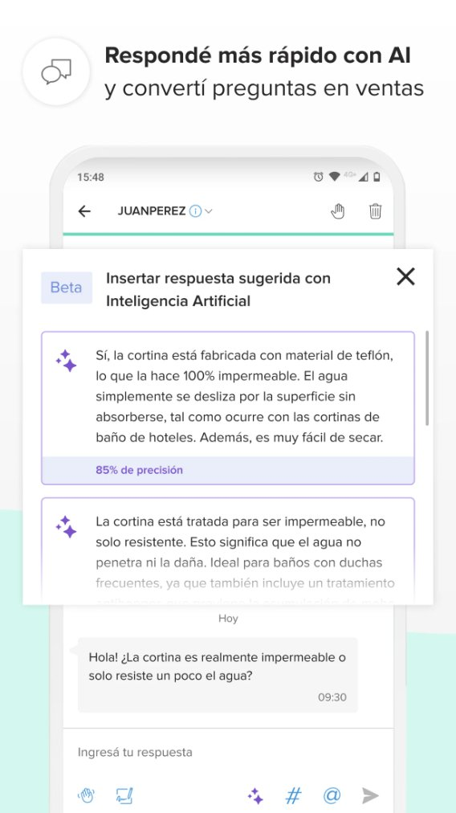
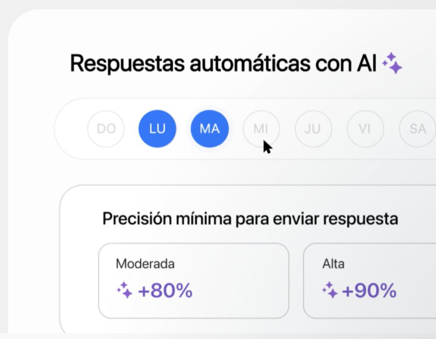
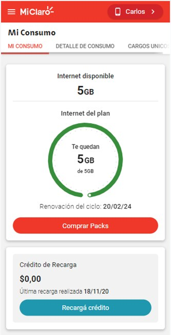

Product Owner & Product Designer · Buenos Aires
Me importan las personas, por eso hace más de 4 años que trabajo en productos digitales, con base en diseño UX/UI.
Llevé a producción herramientas con IA generativa para vendedores de e-commerce, destrabé integraciones frenadas, y siempre trabajo desde el problema real del usuario: datos, entrevistas y validación antes de construir.
Proyectos reales, contados desde el problema hasta el resultado. Hacé click en cada uno para ver el detalle.
De un deseo del CEO a dos funcionalidades reales en producción para vendedores de Mercado Libre.
A principios de 2025 la IA estaba pegando fuerte en las plataformas y el CEO quería implementarla en Real Trends. Luego del discovery encontramos un dolor concreto en los vendedores: si tardaban en responder a sus posibles compradores, bajaba su reputación en Mercado Libre.
Preguntas llegó a producción en 5-6 meses. Tras una reticencia inicial, la adopción creció de forma sostenida.
Aprendizaje: la gente adopta la IA cuando entiende qué hace, mantiene el control y ve resultados rápido.


Piezas publicitadas por Real Trends.
Barajar y dar de nuevo: una integración con Contabilium que llegó a producción en menos de un año.
Los vendedores solo podían facturar desde Mercado Libre. La integración con Contabilium estaba trabada porque el alcance había crecido demasiado.
Los vendedores pasaron a emitir facturas y notas de crédito y débito desde la plataforma.
Aprendizaje: un proyecto trabado por alcance se destraba recortando. Un MVP claro es lo que permite que se priorice.
Estudiar las métricas, priorizar con datos y tener en cuenta la fuerza de trabajo.
Más de 300 bugs críticos que desarrollo no conseguía tomar para solucionarlos, y usuarios cada vez más disconformes con la plataforma.
Tras la limpieza de bugs duplicados, si ingresaba a desarrollo un proyecto de alguna herramienta afectada, le sumaba el bug para que primero se arreglara el error y después se avanzara en la novedad.
Los bugs disminuyeron un 87% y la satisfacción del usuario comenzó a subir hasta superar los 30 puntos.
Aprendizaje: priorizar bien es encontrar la solución que no perjudique a ningún sector: ni a los usuarios, ni a desarrollo, ni al negocio.
Cambiar un proceso sin autoridad formal.
Los diseños tanto de la app como de la web estaban planteados en pantallas consecutivas que complejizaban el entendimiento del equipo de desarrollo.
Con el UX Lead, capacité al equipo de diseño en la aplicación de user flows de punta a punta.
Ante la resistencia al cambio, lo aplicamos primero en los proyectos más grandes, donde el beneficio se veía más.
Desarrollos sin complicaciones de entendimiento. Los devs entendían los flujos de principio a fin, lo que hizo que los desarrollos fueran más veloces y eficientes. Incluso se detectaron errores en etapas muy tempranas. Junto con la reducción de bugs, el NPS en Argentina llegó a ~48.
Aprendizaje: un piloto de alto impacto convence más que imponer un proceso.
Cómo un panel de gastos hizo que un segmento que no usaba la app empezara a hacerlo.
Los clientes prepagos recargaban desde el SMS con un link directo. La app no les daba nada que no tuvieran en otro lado.
"Mis Consumos": el detalle de gastos de la línea por día, semana y mes.
Aprendizaje: para que un segmento adopte un producto, hay que darle algo que no tenga en otro lado.

Imagen publicada por Claro en sus páginas de ayuda.
Soy Diseñadora Gráfica y trabajé como diseñadora UX/UI y Product Owner. Mi estilo de trabajo es usuario-céntrico.
Diseño la app de una plataforma 0→1 de gestión de pedidos, ventas y stock en Figma, con componentes, auto-layout y variantes, y lidero su discovery: benchmark, plan de entrevistas y definición app vs. web.
Prototipo navegable del inicio de sesión. Hacé click dentro para recorrerlo.
Abrir el prototipo en Figma →Flujos y pantallas de la app mobile, librería de componentes en Atomic Design y transición al design system Atlantis.
Para Puro Diseño (feria de diseño): un sistema aplicado con consistencia a app y web.
Research, flujos y diseño de interfaz, de punta a punta.
Ver en Behance →Un agente conectado a Jira que detecta bugs importantes y los avisa como urgentes; agentes que agendan citas y envían mails; prototipos con Claude Design y Claude Code.
Ministerio de la Ciudad de Buenos Aires
Real Trends · SaaS para vendedores de Mercado Libre (Argentina, Brasil y México)
Claro · App Mi Claro (Argentina, Uruguay y Paraguay)
Claro · App Mi Claro
Métricas, SQL, entrevistas y customer journeys para encontrar el problema real.
KPI Tree y Opportunity Solution Tree para conectar oportunidades con objetivos.
Hipótesis, tests A/B, Fake Door, Dogfooding y Early Adopters.
User flows, story maps e historias de usuario con criterios de aceptación.
Seguimiento después del lanzamiento para iterar del MVP al producto completo.